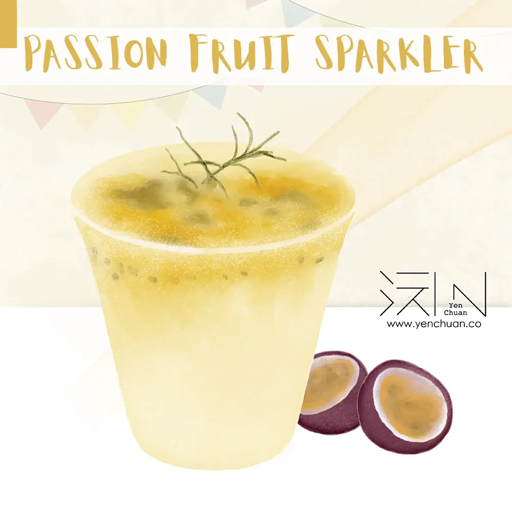
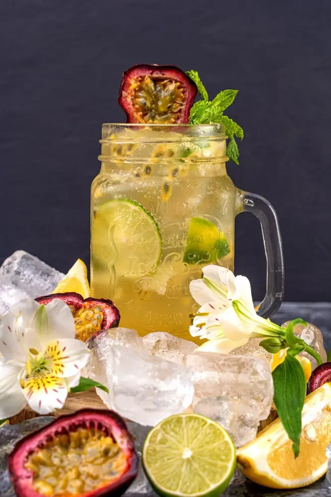
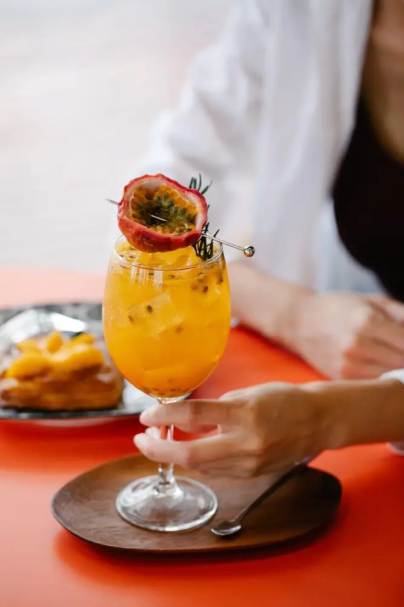

Articles / Recipes
How to make Passion Fruit Sparkler
2022-09-07 · News, Recipes

Original public content from Yen Chuan. Product claims and specifications remain subject to confirmation by the company.
Nothing is better than a bubbly treat to beat the heat, time to get the whole fam together with glasses of our Passion Fruit Sparkler!

What’s great about this drink?
This bright, vibrant and fruity drink features a perfect balance of sweetness, tartness, and the delicious tang of fresh passion fruit juice. This is the perfect way to boost your mood and your health!
Looking for a quick mocktail for a girls’ night in, a garden party, or a family gathering? This is it! Passion fruit sparkler never fails to impress, and you can whip up this gorgeous drink in less than 5 minutes.
This quick, easy mix is the perfect pick-me-up treat to enjoy everyday. With no bartending skills required, this mocktail is super simple to make at home! All you need is three ingredients to create this punchy, tropical drink. The fizzy, refreshing soda will certainly leave your tastebuds bubbling!
Mix up a batch of this Passion Fruit Sparkler at home or in a party, and dazzle your family and friends with the delicious beverage!
Passion Fruit Spritzer
Get the whole fam together with glasses of tropical fizz.
What you’ll need
How to make
Quick tip: Cool the drink well for some extra fizz!

For best results, make one glass at a time to keep it fresh.
Want something more? Feel free to customize it to your tastes (such as adjusting the amount of passion fruit syrup).
Party night at your place? Try jazzing up this mocktail with vodka or gin to get this party started!
Want to give it a try?